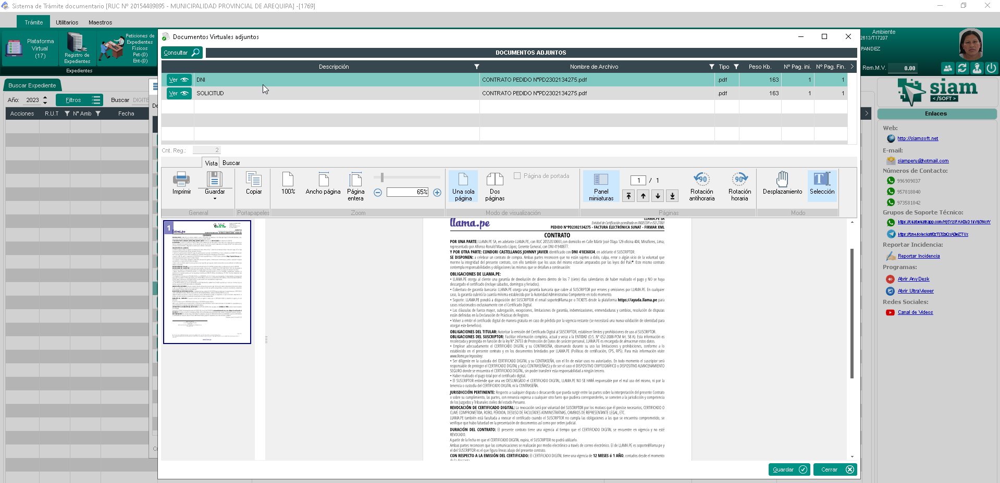
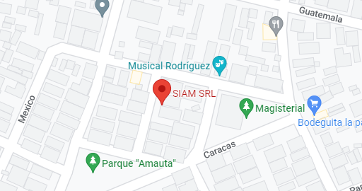

Control Total de Documentos
Localice cualquier documento en tiempo real, de manera digital
¿Qué es la Ubicación Virtual?
El módulo de Ubicación Virtual de SIAMsoft es una solución integral que permite a las instituciones rastrear y gestionar documentos en cualquier formato y ubicación, eliminando la pérdida de información y optimizando los tiempos de búsqueda.
Este sistema combina tecnologías de código de barras y RFID para documentos físicos, junto con sistemas de indexación y búsqueda avanzada para documentos digitales, proporcionando una vista unificada de todo el acervo documental.
Beneficios Clave
- Reducción del 90% en tiempo de búsqueda de documentos
- Eliminación de documentos extraviados o perdidos
- Integración perfecta entre documentos Digitales
- Notificaciones en tiempo real sobre movimientos documentales
- Historial completo de ubicaciones para auditoría
- Acceso desde cualquier dispositivo con conexión a internet
Características Principales
- Sistema de geolocalización para archivos Digitales
- Mapa interactivo de ubicaciones de documentos
- Búsqueda por múltiples criterios (código, fecha, tipo, etc.)
- Informes de documentos en préstamo o en tránsito
- Alertas por vencimiento de plazos de devolución
- Integración con sistemas de gestión de archivos digitales
- Soporte para múltiples repositorios digitales
¿Cómo funciona?
- Cada documento digital es etiquetado con un código único
- Los movimientos se registran mediante escaneo o app móvil
- Los documentos digitales son indexados automáticamente
- El sistema actualiza la ubicación en tiempo real
- Los usuarios consultan la ubicación mediante búsqueda simple
Capturas del Sistema

Búsqueda Avanzada
Encuentre documentos con múltiples criterios de filtrado

Geolocalización
Visualice la ubicación exacta de documentos Digitales
Historial Completo
Acceda al historial de movimientos de cada documento